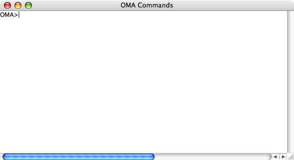
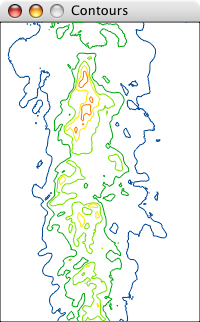
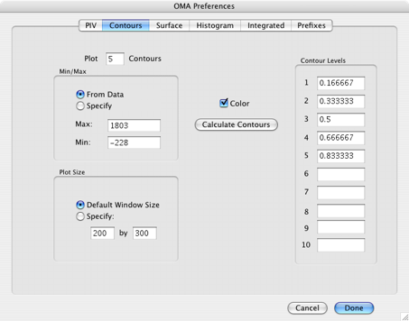

First Steps

The Command Window
This window is used for the command driven functions of the OMA program and behaves much like a standard terminal. The Command Window can be resized, and moved but not closed. Text scrolled off the top of the window is not lost and can be viewed using the scroll controls.
A blinking cursor is displayed when the Command Window is selected. The standard prompt for new commands is "OMA>". Commands entered from the keyboard are terminated with "return" or "enter". Only the first part of a command name needs to be entered. If this leads to ambiguity the parser will take the first suitable command (in alphanumeric order) that appears in the internal command buffer, so caution should be exercised when abbreviating commands.

Copying and pasting text in the command window works as in other Macintosh applications. This may be useful for keeping a record of a data taking session. It may also be useful to copy filenames or parts of filenames so that they can be pasted with <cmnd v> or the "Paste" menu item.
Command Abbreviations
OMA has over 300 commands that consist of from two to six characters. Commands are not case sensitive. It will always work to type the entire command, but it is often convenient to abbreviate commonly used commands. When an ambiguous character sequence is typed, the command interpreter will take the first command from the internal command list that matches all of the characters typed. Ordering in the internal list seeks to put the most widely used commands toward the top of the list, thus maximizing the extent to which they can be abbreviated. To see the internal ordering of OMA commands, type HELP with no argument (or, as it turns out, just “H” will do). This gives the internal list of commands. Note that the main commands are listed first, followed by “Custom” commands. For more information on adding Custom commands, see the OMA Software Developers Kit Documentation.
Some examples of commonly used commands and their shortest abbreviations are as follows:
d DISPLA
e ERASE
g GET
gm GMACRO
gt GTEMP
l LMACRO
m MAX
p PIXSIZ
r RMACRO
s SAVE
st STEMP
The Status Window
The Status Window controls the display of the data in the current image buffer. The Status Window cannot be closed or resized, only minimized.
The top most pane contains information about the limit values for the false color palette. The pixel intensity that corresponds to the first value in the color map is displayed in the “Color Min:” register. The pixel intensity corresponding to the last value in the color-map is displayed in the “Color Max:” register. These values can be specified by the CMINMX [n][m] command, or by using the buttons to increase or decrease the values. The value is incremented by a percentage of the difference between the maximum and minimum for the current image. Sliding the “Min/Max Increment” control changes the increment. If the “Update” set box is checked, the current displayed image (if there is one) will be updated and redisplayed to the new color parameters. If the “Scale” check box is checked, then the color map will scale to the minimum and maximum intensities in the image, equivalent to using CMINMX without arguments.
The second pane specifies the bounds of the current rectangle, if the rectangle tool is selected. If the cursor tool is selected clicking in the image will display the pixel location and intensity here. Information about the Image Dimensions, Location on a CCD (X0, Y0 - seldom applicable) or information about pixel binning (DX, DY).
Cursor tools are selected using the icons in the next pane. The five tools are used to (1) read out pixel values, (2) specify a rectangle on the current image, (3) calculate quantities within a specified rectangle, (4) measure distances on the current image, or (5) plot the intensity along a line specified on the current image.
Finally, there is a line indicating the current macro number as it executes and a strip indicating the current palette color-map.
Menu Commands
Several of the commands beginning with the letter k have menu selection items associated with them. (The second letter of the command is the command- key code associated with the menu item.)
Thus, these commands can be invoked three ways:
(1) By menu selection,
(2) by the associated command-key code, or
(3) typing the "k" command, which is echoed in the command window.
The reason for including this option is so that these functions can be performed from within a macro.
File Prefixes and Suffixes
To specify the path and file type (or extension) for files typed in the command window, prefixes and suffixes may be specified using the Prefixes tab in the OMA Preferences <cmnd f>:

Different paths and suffixes can be used for “getting” and “saving” data files, for macro files, or for Settings Files saved with the “SAVS” or retrieved with “GETS.” OMA now uses the Mac unix style paths. In the example above, data files would be saved and retrieved from a folder named “recent” contained within a folder “image data” on the boot disk (regardless of the name of the boot disk on the desktop). Macros would be saved and retrieved from a folder named “macros” on a different disk (or partition) that would appear on the desktop as “extra drive.” Settings files accessed with the SAVSET or GETSET commands would be saved within the folder containing the oma application.
Using the Graphing Tools
A number of graphics tools are included in the Graph menu. These allow data in displayed windows (or in some cases the data in the image buffer) to be represented in a variety of ways.
Row and Column Plots:
When a window containing a bitmap image is selected, the Plot Rows and Plot Columns menu items can be used to plot the displayed intensity along a row or column. Dragging the mouse in the bitmap window allows real-time selection of different rows or columns. Note that the row and column plots correspond to the bit-mapped images, and not necessarily to the data in the current image buffer. If the color minimum and/or maximum do not correspond to the data minimum and/or maximum, the row and column plots can appear clipped. Keyboard shortcuts for Row and Column Plots are <cmnd 1> and <cmnd 2>, respectively.
Like other OMA graphics windows, the Row and Column windows can be copied to the clipboard as pdf files and pasted into applications that accept pdf files directly (such as Textedit or Preview). Alternatively, they can be saved as pdf files using the SAVPDF command or the “Save Window as PDF...” menu item in the File menu.
Getting started...
Run the program.
Open a data file. For example jet.dat is included.
Open this using the File menu, by double clicking, by dragging the icon to any oma window, or by typing the following in the command window:
OMA>get jet
Display the file -- type:
OMA>disp
open a macro file and run it -- type:
OMA>gmac testmac
OMA>mac
Erase the windows:
OMA>er
Open a jpeg file. Drag the bike.jpg icon onto the oma icon (or any of the oma windows) or type:
OMA>getrgb bike.jpg
Display the rgb file -- type:
OMA>drgb
Display the r,g,b parts of the image
OMA>disp
Contour Plots

To create a contour plot of the data in the current image buffer, use the Plot Contours menu (or the <cmnd p> keyboard shortcut, or the KPLOT command). Settings for contour plots are specified using the Set Contours... item under the Graph menu (also available as a tab in the Preferences... menu). This dialog allows specification of the number of contours, the contour levels, the minimum and maximum for the plot, and the window size. The Calculate Contours button fills in the contour levels with the specified number of equally space contours.

Surface Plots
The Plot Surface menu item is used to represent the data in the current image buffer as a hidden-line surface plot. The Set Surface... menu item (also available through a tab in the Preferences... menu) is used to set the min/max, window size, plot format and color choices, To set the plot format, select either Standard Plot or Vanishing Point Plot and press the Set View button to adjust the footprint of the surface plot.

Getting Help
In addition to this web-based help, the HELP command can be typed in the command window. Its format is as follows:
HELP [command name or fragment]
If a command name is given, a brief explanation of the command is printed in the command window. If only part of the command is given, a description of all commands that match the command fragment is printed. All help information is from the file "oma help.txt." If no argument is given, all command names are printed with no explanation. Commands are listed in the order that they appear in the internal command list.